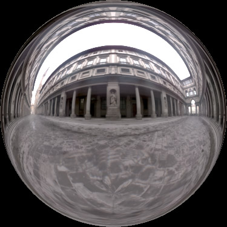
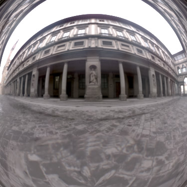
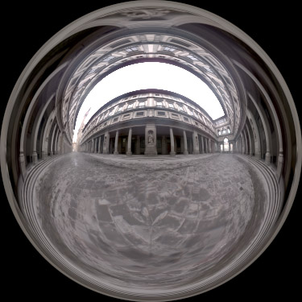
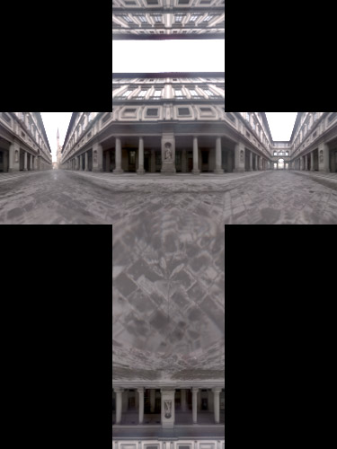
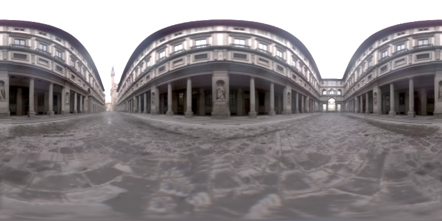
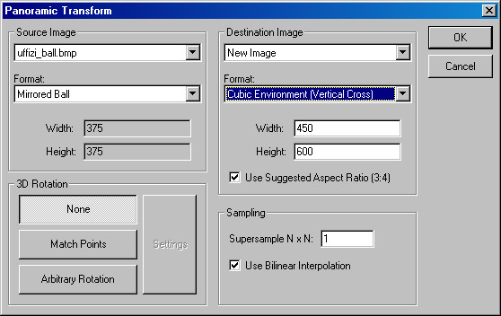

HDR
Shopは、以下のようなフォーマット間におけるパノラマ画像の再サンプリングを行うことができます。
|
 |
 |
|
Mirrored Ball (360x360 degrees) ミラーボール(360x360度) |
Mirrored Ball 180 Degree Close-up ミラーボール 180度クローズ・アップ |
|
 |
 |
|
Angular Map (Used in the Light Probe Gallery) アンギュラ・マップ |
Cube Map (Vertical Cross) キューブ・マップ（垂直十字型） |
|
 |
|
|
Latitude/Longitude 緯度/経度 |
|
このチュートリアルでは、「ミラーボール」パノラマを「キューブ・マップ」フォーマットへどのように再サンプリングするかを説明しています。ミラーボール形式でのUffiziパノラマ画像（上記）のHDRバージョンは、ホームページよりダウンロード可能です。
HDR
Shopにミラーボールのイメージをロードしたら、メニューの “Image”、 “Panorama”より、“Panoramic
Transformations.....”を選択します。以下のダイアログが表示されます：

“Source Image”ボックスには、ロードしたミラーボールパノラマ画像が見えているはずです。正しいファイル名がそこになければ、ファイル名を表示している箇所の下向き矢印をクリックして、適切なファイルをリスト上から選択してください。リストでは、HDR
Shopで現在開かれているファイルのみを表示します。 ソースイメージのフォーマットも選択する必要があります。今回は、デフォルトの “Mirrored Ball”が正しい設定となります。
“Destination Image”フィールドは、そのままにしておくのが最も良いでしょう。
“New Image”ではないファイルを選択すると、パノラマ変換の結果、その選択されたイメージ自体が上書きされてしまいます。また、“Format”フィールドでは、“Cubic
Environment”を変換先の画像フォーマットとして選択します。さらに、“Width”と “Height”の値を変更することで、変換先の画像解像度の変更ができます。
“Sampling”ボックス内では、N対Nの“Super-Sample”パターンや線形補間の有無を選択することができます。"Super-Sample”を、エイリアシング（ジャギー）の除去に役立ちます。これは特に、大きいパノラマから、小さいパノラマを作成するときに有用でしょう。サンプル数は、入力した数の二乗になるということに注意してください。つまり、例えば3を入力すれば、HDR
Shopはピクセル毎に9サンプルの計算を行います。これに対し、双一次補間では殆どの場合、小さなパノラマから大きいパノラマを作成する際に役立ちます（そのままにしていても、問題はありませんが）。
“3D Rotation”ボックスは、任意の回転角による回転（x, y, z軸において）、及び、パノラマ画像同士の各点を一致させるための回転に使用します。ここでも、デフォルトの
“None”を選びましょう。
全ての準備が整ったら、OKボタンをクリックします。HDR Shopはミラーボールマップをキューブ・マップへと、再サンプリングします。